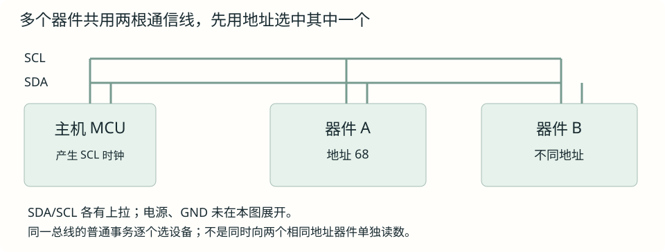
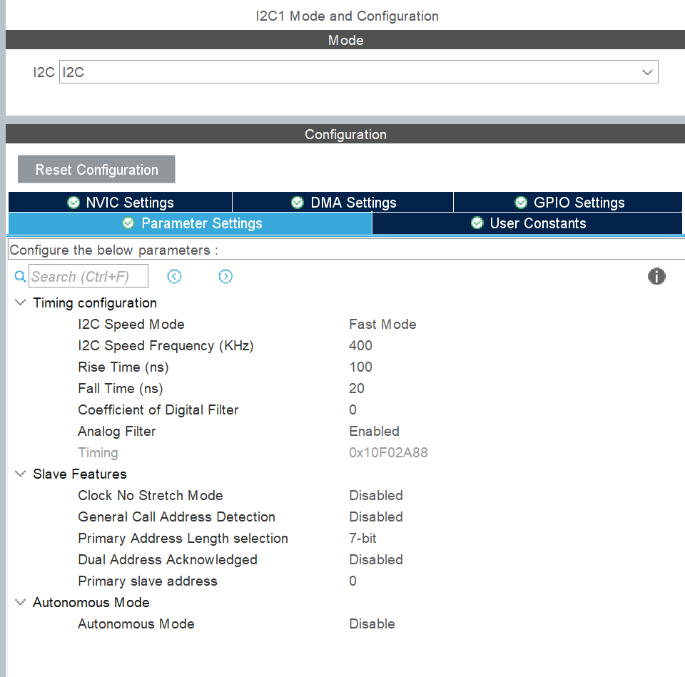
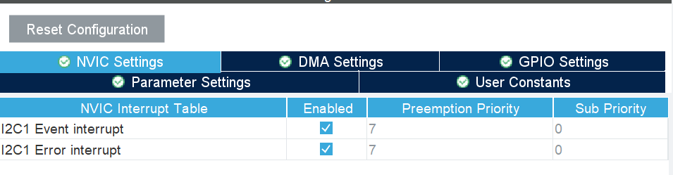
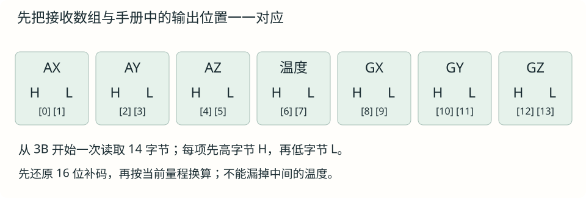
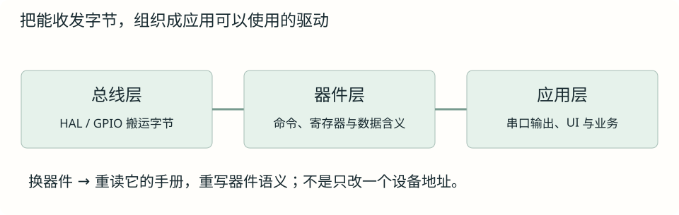

I²C：读懂总线，写出一个传感器驱动
从为什么只需要一根数据线讲起，再沿 MPU6050 的手册完成身份、配置、数据读取与驱动封装。
第 1 节 · 从 SPI 出发：省掉片选线，再省掉一根数据线
前面讲 SPI 时，主机通过 CS 片选线选中要通信的器件。连接多个器件时，每个器件通常都需要自己的一根 CS，器件越多，占用的片选引脚也越多。
现在我们想省掉这些片选线，让多个器件共用通信线路。但这样就出现了一个问题：没有 CS 了，主机怎样确定这次选哪颗器件？器件又怎样知道主机是不是在找自己？
I²C（也常写 IIC）的办法是引入设备地址，用一个编号区分总线上的器件。主机在通信开头，先通过数据线发出要找的设备地址。总线上的器件都检查这个地址，只有地址匹配的器件回应并参与后续通信，其余器件不应答。这样，就能通过发送地址来选择器件，省去每颗器件单独的一根片选线。
下面先讨论一个主机连接多个从机的情况；手册中的 controller/target 与常见的主机/从机说法对应。
既然已经省掉了片选线，能不能再省一根线呢？可以，还能把 SPI 原来的两根数据线合成一根。接下来就看看，这一根数据线怎样完成两个方向的通信。
为什么只要一根数据线？代价是什么？
SPI 全双工接法用 MOSI 和 MISO 分别承载两个方向，可以一边发、一边收。如果放弃“两个方向同时传数据”，就能让双方轮流使用同一根线：主机发送时，从机听；从机发送时，主机听。这就是本章 IIC 的半双工方式。
因此 IIC 只保留两条通信线：SCL 时钟线维持共同节奏，SDA 数据线轮流承载两个方向的数据。电源与 GND 仍要连接，“两线”不包含它们。省引脚的代价包括不能同时双向交换有效数据，以及需要地址、应答和方向交接等过程。

设备地址与寄存器地址不是一回事
设备地址回答“找哪颗芯片”。选中芯片后，通常还要指定“操作里面哪个位置”，这就用到寄存器地址。可以把前者理解成选择一个设备，后者理解成选择它的某项配置或数据。它们不是同一层的地址，恰好数值相同也没有特殊关系。
例如 MPU6050 的七位设备地址可为 0x68；它内部的身份寄存器地址是 0x75，读出的身份值又是 0x68。这里第一个 0x68 是找设备用的编号，第二个是从数据位置读出的内容，不能因相同就认为读到了设备地址本身。
同一颗器件，为什么会出现 0x68、0xD0、0xD1？
先固定看一颗 MPU6050：AD0 接低电平时，它的设备地址是 0x68。把它写成七位二进制，就是 1101000。这七位只负责告诉总线上的器件“我找谁”。无论接下来读还是写，找的都是这颗 MPU6050，这七位就保持不变。
但主机还要告诉被选中的器件：这次是主机写入，还是主机读取？IIC 在这七位后面再接一位：0 表示写，1 表示读。这样，通信时先发出的就是一个完整的八位字节：
| 接下来要做什么 | 线上发出的八位：找谁 + 读写位 | 整个字节的值 |
|---|---|---|
| 主机向这颗器件写入 | 1101000 0 | 0xD0 |
| 主机从这颗器件读取 | 1101000 1 | 0xD1 |
注意看前七位，两行都是 1101000，所以选中的器件相同。只有最后一位变了，用来区分读、写。0x68 是设备地址；0xD0 和 0xD1 是加上读写位后，通信时发出的地址字节。
现在再看数据手册的不同写法，就能对应起来了：
- 写着 7-bit address = 0x68：手册只给出了用于选择器件的七位。
- 分别写着 Write address = 0xD0、Read address = 0xD1：手册已经把读写位也加进去了。手册把它们称为“八位地址”时，说的就是上表中的整个地址字节。
所以下面统一用“设备地址”指 0x68 这样的七位编号，用“地址字节”指 0xD0 / 0xD1 这样包含读写位的八位数。查手册时先看它是否包含 R/W 位，再决定怎样处理。
七位设备地址后接一位读写标志，见 NXP IIC 规范 §3.1.10、图 10。
写程序时，什么时候需要 << 1？
刚才是在七位编号 1101000 的后面接上一个读写位。在 C 里，可以先用 << 1 把原来的七位向左移动，末尾补一个 0，为读写位留出位置：
0x68 << 1：1101000 → 11010000，结果就是 0xD0。
接下来要区分：交给 HAL 函数的参数，和最终在线路上发出的地址字节。本项目使用 STM32U5 HAL1，在七位地址模式下，DevAddress 这个参数要求调用者先把设备地址左移一位。因此，调用函数时这样填写：
| 调用哪种函数 | 传给 DevAddress 的值 |
|---|---|
| HAL 的写函数 | 0x68 << 1，也就是 0xD0 |
| HAL 的读函数 | 同样传 0x68 << 1，也就是 0xD0 |
为什么读的时候也传 0xD0？因为读写方向由 HAL 根据调用的函数另行设置。传参时，调用者只需要把设备编号左移、留好最低位；发出读方向的地址字节时，HAL 会把读写位设成 1，使它成为 0xD1。参数里末尾补的 0，不代表调用者已经选定了写方向。完整的读寄存器过程会在第三节展开。
因此，拿到手册后，填写本章 HAL 参数时只需分清这两种常见情况：
- 手册给的是设备地址 0x68：使用
0x68 << 1，得到0xD0。 - 手册已经列出写地址 0xD0、读地址 0xD1：直接取其中的写地址
0xD0，读、写函数都使用它，不再左移。
仓库的 MPU6050.c 已经把 MPU6050_Addr 定义为 0xD0，所以后面读它的代码时，会看到函数直接使用这个值。左移已经做过一次，就不要再移一次。器件内部的寄存器地址 0x75 则仍原样传入，不参与这里的转换。
查阅：手册只给读地址字节，或者换了其他函数库怎么办？
如果手册明确给的是含读写位的读地址字节 0xD1，可以先用 0xD1 >> 1 去掉最低读写位，得到设备地址 0x68，再按本章 HAL 的要求左移一次。这样最终传入的仍是 0xD0。对已经包含读写位的数，不要直接再左移。
如果换用的库规定参数直接接收七位设备地址，那就直接传 0x68，不用左移。是否移位由函数接口约定决定；本章“读、写都传 0xD0”的规则针对本项目的 STM32U5 HAL1 接口。
同样，I2C_MEMADD_SIZE_8BIT 表示器件内部寄存器地址占一个字节，后面会在 HAL 参数表里解释。它与设备地址是否包含读写位无关。
接口约定见仓库 HAL_I2C_Mem_Read 参数说明；驱动中的定义见 MPU6050.c。函数的完整参数在第四节讲解。
第 2 节 · 两根线怎样传出一个字节？
先认清两根线的名字：SDA 是数据线，线上电压的高、低用来表示 1、0；SCL 是时钟线，电压反复由低变高、再变低，两端按照这个节奏安排准备数据和读取数据的动作。下面固定用 STM32 作主机、一颗传感器作从机来讲。
以采用 3.3 V 逻辑电平的接线为例，以 GND 为 0 V：SDA 电压接近 0 V 时，芯片读作 0；接近 3.3 V 时，读作 1。这里先用“低”和“高”指这两种电压状态，实际判定范围以芯片手册为准。
先看电路：“拉低”和“释放”究竟做了什么？
STM32 和传感器都连在同一根 SDA 上。每颗芯片内部都有控制这根线的电路，可以先用一个连接 SDA 与 GND 的开关来理解：
- 内部开关接通：SDA 经过芯片内部电路接到 GND，电压接近 0 V。这叫拉低 SDA。
- 内部开关断开：这颗芯片停止把 SDA 接到 GND。这叫释放 SDA。断开的是内部连接，外面的导线仍然连在引脚上。

那么，两边的内部开关都断开后，SDA 怎样回到高电平？接线中还有一只电阻，把 SDA 连向 3.3 V 电源。没有芯片把 SDA 接到 GND 时，它使 SDA 回到接近 3.3 V。这只电阻叫上拉电阻。
这就是本节使用的开漏输出：芯片负责接通或断开到 GND 的内部连接，上拉电阻负责在两端都断开时使线路回到高电平。后文说“拉低”，就对应第一种动作；说“释放”，就对应第二种动作。
把这个电路与 GPIO 的 SET、RESET 对上
在 GPIO 配置为开漏输出时，写 RESET 使内部电路接到 GND；写 SET 使这条内部连接断开。于是 SET 之后，读到高还是低，还要看另一颗芯片和上拉电阻。使用硬件 IIC 时，IIC 外设按通信过程控制这些动作。
先只传一个 0：哪根线先变，另一端什么时候读？
现在让 STM32 发送、传感器接收。STM32 设置 SDA 上的电平，传感器按照 SCL 的节奏读取。
- 让 SCL 处于低电平。这段时间用来准备要发的数据。
- STM32 让 SDA 变为低电平。低电平表示要发送的
0。 - 让 SCL 变为高电平。SDA 保持低，传感器在这段时间读到
0。 - 让 SCL 再变回低电平。这一位结束，可以准备下一位。
要发送 1，只需在第 2 步让 SDA 为高，并在第 3 步保持高，传感器读到的就是 1。其余步骤相同。
一个 0 或 1 叫一位（bit），八位组成一个字节。IIC 先传最高位 bit7，最后传 bit0。例如 0xD0 的二进制为 11010000，就按 1、1、0、1、0、0、0、0 的顺序重复上面的过程。
怎样让器件知道“开始了”和“结束了”？
前面只看了一位数据。真正通信时，STM32 还要先发出一个开始标志，让总线上的器件准备接收。没有通信时，SDA、SCL 都保持高电平，称为空闲。
开始标志 START：STM32 先让 SCL 保持高，再让 SDA 从高变低。器件看到“SCL 仍然高，SDA 却从高变低”，就知道一段通信开始了。随后 STM32 让 SCL 变低，准备第一个数据位。
结束标志 STOP：最后一次应答结束后，STM32 先在 SCL 为低时让 SDA 变低；接着让 SCL 变高，SDA 仍保持低；最后让 SDA 从低变高。器件看到“SCL 仍然高，SDA 从低变高”，就知道这段通信结束了。

为什么不会把它们误读成普通的 0 或 1？因为传数据时，SDA 在 SCL 为高的整段时间保持不变；START、STOP 则利用这段时间内 SDA 的变化，分别表示开始和结束。
八位发完，怎样给接收方一个回应的机会？
STM32 发出八位数据，只能说明它完成了发送，还不知道传感器是否在场、是否能够接收。因此 IIC 在每个字节后留出一次应答机会，由接收方回应。
STM32 发完八位后，还会提供第九个时钟。前八拍由 STM32 在 SDA 上放数据；第九拍把 SDA 留给刚才接收数据的传感器回应，这一拍不是第九个数据位。SCL 的节奏仍由 STM32 控制。
- 第八拍结束，SCL 回到低电平。STM32 释放 SDA，把第九拍的 SDA 电平交给传感器决定。
- 传感器准备应答。确认接收时，让 SDA 为低；没有应答时，SDA 为高。
- STM32 让 SCL 变高，并读取 SDA。读到低，就是 ACK（应答）；读到高，就是 NACK（未应答）。
- STM32 再让 SCL 变低。这一拍结束，传感器释放 SDA，双方再准备后续传输或结束信号。

传感器向 STM32 返回数据时，谁来应答？
读取传感器数据时，前八拍改由传感器设置 SDA，STM32 读取。第九拍就由刚接收这八位的 STM32回应。可以先用这条规则判断：这一字节是谁接收的，应答就由谁决定。
| 前八拍是谁发送？ | 谁接收？ | 第九拍由谁应答？ |
|---|---|---|
| STM32 发送设备地址、寄存器编号或待写入的值 | 传感器 | 传感器 |
| 传感器返回读出的数据 | STM32 | STM32 |
例如 STM32 要连续读取两个字节。传感器发完第一个字节后，STM32 在第九拍让 SDA 为低，回复 ACK，表示还要继续接收；第二个字节发完后，STM32 在第九拍让 SDA 为高，回复 NACK，表示这次读取到此为止。随后由 STM32 发 STOP。
把这一节连起来看，一段写入通常是：开始 → 发八位 → 读第九拍应答 → 按需要再发下一个字节并读取应答 → 结束。下一节把设备地址、寄存器编号和实际数值放入这个过程。
扩展：上拉电阻、等待时钟和线路故障
上拉电阻要与接线和通信速率匹配。阻值过大，电压回到高可能太慢；阻值过小，接到 GND 时的电流会增加。模块可能已经带上拉电阻，接线前先查其原理图。初次实验可先用 100 kHz，随后再核对波形。
主机释放 SCL 后，线路的电压需要时间升高；传感器也可能暂时将 SCL 保持为低，让主机多等一会儿，这叫时钟拉伸。主机应确认 SCL 实际已为高，再继续相应动作；软件等待也需要超时限制。多主机同时访问和线路一直为低的恢复过程，留到基本读写通顺后再学习。
名词查阅：SDK 与 SDA、SCL 有什么区别？
SDA、SCL 是本节两根通信线的名称。SDK 是 Software Development Kit（软件开发工具包），通常指厂商提供的一套库文件、头文件、示例和开发工具，帮助我们写程序。STM32 的库函数和示例属于软件开发资料；SDA、SCL 则对应硬件接线。
第 3 节 · 从一次传输，走到一次寄存器读取
寄存器先理解成芯片开放的配置与数据位置
传感器并非接上就会主动往 MCU 内存里写数据。它通常提供若干位置：有的用于选择量程，有的表示是否准备好，有的保存测量结果。给这些位置编号，应用就能通过读写改变设置或取得信息。具体哪个地址有什么含义，必须查对应型号的寄存器手册。
一个寄存器常有八位，但每一位可能做不同事情。手册里的 R 表示只读、R/W 表示可读写；Reserved 是保留位，不应随意设置。有些状态读一次就清除，有些位写 1 才清除，不能认为所有地址都像普通 RAM 一样随便读回、覆盖。
完整走一遍：让 STM32 读出 MPU6050 的型号标识
现在假设 STM32 已经接好一颗 MPU6050。我们先做一件具体的事：读出它的型号标识，检查接上的器件是否符合预期。数据手册把保存这个标识的寄存器叫作 WHO_AM_I，可以理解成芯片回答“我是谁”的位置。
根据MPU6050 寄存器手册 §4.34，本次读取要用到下面三个数。这里仍以 AD0 接低电平为例：
| 先明确的问题 | 本例的答案 |
|---|---|
| 找总线上的哪颗芯片？ | 设备地址为 0x68 的 MPU6050 |
| 读它内部的哪个位置？ | 寄存器地址 0x75，名称为 WHO_AM_I |
| 预期从这个位置读到什么？ | 型号标识值 0x68 |
本例的设备地址和预期型号标识都是 0x68：前一个是 STM32 发出去选芯片的，后一个是芯片返回的数据。我们要完成的是：先告诉 MPU6050“我要读 0x75 这个寄存器”，再让它把其中的一个字节发回来。

前半段：STM32 告诉 MPU6050，要读哪个寄存器。
- STM32 发出 START。总线上的器件开始等待主机发送设备地址。
- STM32 发送
0xD0，MPU6050 回复 ACK。0xD0是前面算过的“设备地址0x68加写方向”。它选中这颗 MPU6050，并说明接下来的字节由 STM32 发送。 - STM32 发送
0x75，MPU6050 再回复 ACK。这个字节告诉芯片：“接下来访问 WHO_AM_I 寄存器。”芯片记下要访问的位置，准备随后返回这里的内容。
到这里，STM32 已经把“读哪个位置”告诉了芯片。接下来要让 MPU6050 把寄存器内容发回来，因此需要把传输方向改为读。
后半段：MPU6050 返回数据，STM32 接收并结束。
- STM32 再发出一次 START，中间先不发 STOP。上一次 ACK 结束后，SCL 先回到低，MPU6050 释放 SDA，使 SDA 回到高。随后 STM32 让 SCL 变高，再让 SDA 从高变低，形成新的 START。这就叫重复起始（Repeated START）：在同一次操作里，重新开始发送设备地址。
- STM32 发送
0xD1，MPU6050 回复 ACK。这次仍选中设备地址为0x68的同一颗芯片，但最后的方向位变成了1，表示“现在请你发送数据给我”。 - MPU6050 发送寄存器中的一个字节，STM32 读取。此时数据的发送方换成了 MPU6050；SCL 时钟仍由 STM32 产生。对于 WHO_AM_I，预期收到的八位是
01101000，也就是0x68。 - STM32 在第九拍回复 NACK。因为只需要这一个字节，STM32 用高电平表示“这次读到这里就够了”，不再要求下一个字节。
- STM32 发出 STOP。本次通信结束，读到的
0x68已经保存在 STM32 的接收变量中。
这次读取的结果是什么？STM32 取得了 WHO_AM_I 寄存器的内容，再将它与手册给出的预期值 0x68 比较；一致时，就通过了这一步型号标识检查。
为什么读之前，先用写方向发两个字节？因为芯片还不知道 STM32 想读哪一个寄存器。0xD0 让芯片准备接收主机发来的字节，紧接着的 0x75 用来指定寄存器位置；随后通过重复 START 和 0xD1 改成读方向，芯片才把这个位置的内容返回。把它连起来记，就是：选芯片 → 指定寄存器 → 改为读方向 → 取回数据 → 结束。
这条先指定寄存器、再改为读取的流程，见MPU6050 产品规格书 §9.3，单字节读取时序。重复 START 连接着前后两段操作；其他器件是否允许中间先 STOP、是否也采用寄存器读写方式，应查它自己的手册。
对照一下：真正写入寄存器内容时，后面还会发什么？
例如，要把数值 0x01 写入 MPU6050 的电源管理寄存器 0x6B，STM32 会先发 START，再依次发送三个字节：
0xD0：选中 MPU6050，采用写方向。0x6B：指定要写入的寄存器。0x01：把这个值作为寄存器的新内容。
三个字节每发送完一个，都由 MPU6050 回复 ACK，最后由 STM32 发 STOP。可以看到：指定寄存器地址之后，再发送数值，是写入内容；指定寄存器地址之后，改为读方向，则是取回内容。后面的初始化例子会再结合寄存器位定义解释具体配置值。
把刚才的寄存器读写，写成函数调用
刚才把总线上的动作逐步拆开，是为了看懂 STM32 和传感器分别做了什么。写程序时，可以调用 HAL 提供的两个函数，让 IIC 外设完成这些时序：
| 函数 | 调用后要完成的事 |
|---|---|
HAL_I2C_Mem_Read() | 指定芯片和寄存器，将读出的字节存入我们提供的变量。 |
HAL_I2C_Mem_Write() | 指定芯片和寄存器，将我们提供的字节写入那个位置。 |
名字中的 Mem 在这里对应器件内部的位置，MPU6050 的寄存器也可以这样读写。这两个函数都会返回本次通信的状态，其中 HAL_OK 表示成功；读函数实际读到的数值，放进我们指定的变量里。
下面使用已经完成 I2C1 配置和初始化的实验工程。i2c.h 声明了工程中的 hi2c1 变量，用它管理 I2C1；把 &hi2c1 传给函数，就表示本次使用 I2C1。配置和初始化步骤接着在第四节讲。
例一：读取 WHO_AM_I，让结果进入变量 id。
这次选设备地址 0x68 的 MPU6050，读寄存器 0x75，只取一个字节。MPU6050 规定寄存器编号用一个字节发送，所以这里的地址长度参数写 I2C_MEMADD_SIZE_8BIT。
包含 i2c.h；调用部分放在 I2C1 初始化完成之后
#include "i2c.h"
uint8_t id = 0;
HAL_StatusTypeDef read_status = HAL_I2C_Mem_Read(
&hi2c1, 0x68 << 1,
0x75, I2C_MEMADD_SIZE_8BIT,
&id, 1, 50);按顺序读这次调用：&hi2c1 选择 I2C1，0x68 << 1 选择 MPU6050，0x75 选择它内部的 WHO_AM_I 寄存器。&id 告诉函数把数据存到哪里，1 表示读取一个字节，50 是以毫秒为单位的超时参数。
HAL_StatusTypeDef 是 HAL 用来表示通信状态的类型。调用返回后，先看 read_status：为 HAL_OK 时，才能把 id 当作本次读到的结果，再检查它是否等于 0x68。read_status 保存通信状态，id 保存寄存器里的值。可以在调试器中分别观察它们。
这一句读函数，会完成前面图里的“选择芯片 → 指定 0x75 → 重复 START → 改成读方向 → 收取一个字节 → NACK → STOP”，并把收到的字节存入 id。
例二：把变量 value 里的 0x01 写入寄存器 0x6B。
仍然使用同一颗 MPU6050。这次将要写入的数值放在 value 中，再把它的地址交给写函数：
同样包含 i2c.h，并在 I2C1 初始化完成后调用
uint8_t value = 0x01;
HAL_StatusTypeDef write_status = HAL_I2C_Mem_Write(
&hi2c1, 0x68 << 1,
0x6B, I2C_MEMADD_SIZE_8BIT,
&value, 1, 50);与读函数对照：寄存器改成了 0x6B，数据地址改成了 &value。在写函数里，这个地址告诉 HAL 从哪里取得要发出的数据；1 表示写入一个字节。
当 write_status == HAL_OK 时，这次写入通信已完成。对应的总线过程就是“START → 发送 0xD0 选芯片 → 发送 0x6B 选寄存器 → 发送 0x01 作为内容 → STOP”，三个字节都由 MPU6050 应答。
后面阅读仓库的 reg_read() 和 reg_write() 时，会看到它们正是调用这两个 HAL 函数来完成寄存器操作。完整参数表见第四节的 Mem_Read / Mem_Write 说明。
函数签名和参数约定可对照仓库中的 HAL_I2C_Mem_Write、HAL_I2C_Mem_Read。
本章把两份 MPU6050 手册放在旁边
主例使用仓库曾用、现已停用的 MPU6050。以下是 InvenSense 厂商原文的 SparkFun 托管副本：产品规格书 PS-MPU-6000A-00 Rev.3.4（2013-08-19），负责电气、接口和通信；寄存器说明 RM-MPU-6000A-00 Rev.4.0（2012-03-09），负责地址和位定义。页码按各自 PDF，不要在另一版本中直接套页码。链接用于查阅，不把 MPU6000 的 SPI 能力套到 MPU6050 上。
| 要查的问题 | 手册入口 | 本章怎么用 |
|---|---|---|
| 引脚、供电与地址选择 | §7.1～7.2，p.21～22；§9.2～9.3，p.33 起 | AD0 低选 68，高选 69；模块的稳压及上拉另查其原理图 |
| 身份与电源管理 | §4.34，p.46；§4.30，p.41 | 75：WHO_AM_I；6B：复位、睡眠和时钟 |
| 量程、滤波与输出节奏 | §4.2～4.5，p.11～15 | 19、1A、1B、1C，读位定义再设置 |
| 是否有新数据、怎样拼接 | §4.17～4.20，p.29～32 | 3A 状态；3B 起连续读取加速度、温度、角速度 |
接成品模块时，VCC 标记不必然等于芯片裸片 VDD，AD0 也可能已有默认电阻。先确认模块额定供电与 IO 电平，再把 SDA/SCL 接到实验工程相应引脚并共地。INT 本章轮询实验暂不接，XDA/XCL 是辅助接口，不要误当成主 IIC 接口。
已经知道线上动作之后，下一步由硬件 IIC 外设完成这些时序，先把器件读通。用普通 GPIO 手动产生相同动作的软件 IIC，放在本章末尾的可选扩展中。
第 4 节 · 在 CubeMX 与 HAL 中完成同一件事
先读配置截图：哪些是主机实验需要的？
选择 I2C1 的 I2C 模式，核对 SDA、SCL 对应引脚。仓库 i2c.c 使用 PB3 作 SDA、PB6 作 SCL，配置为 Alternate Function Open Drain；这里的复用表示由 IIC 外设接管时序，开漏仍保持前面“拉低或释放”的电气规则。

| 界面设置 | 怎样理解 | 本次使用 |
|---|---|---|
| I2C Speed Mode / Frequency | 总线时钟速率类别与目标值 | 截图 Fast Mode、400 kHz；不是每秒 400000 个有效数据字节 |
| Rise/Fall Time | 对线路上升/下降时间的输入估计，参与时序计算 | 截图 100/20 ns，不是软件设置后线路就必然达到这些值 |
| Analog / Digital Filter | 对输入毛刺的过滤，会影响时序 | 截图模拟 Enabled、数字系数 0；先沿用并核对实际波形 |
| Timing | 根据外设时钟与时序要求计算的寄存器值 | 截图 0x10F02A88，与当前仓库一致；换时钟或速率不能原样照搬 |
| Primary Address Length | 地址格式选择 | 本章七位设备地址 |
| Primary slave address | STM32 自己作为从机时使用的地址 | 主机实验中的 0 不是 MPU6050 的地址；设备地址在 HAL 调用中传入 |
| Clock No Stretch Mode | STM32 作从机时是否禁止其时钟拉伸 | Disabled 不代表把所有从机的拉伸关掉 |
| General Call / Dual address / Autonomous | 广播、自身双地址与自主工作等选项 | 本次不使用，按截图禁用 |
GPIO 页检查开漏与上拉，线路上的外部上拉仍需按硬件核对。PB6 的 Fast-mode Plus 驱动能力选项不等于把总线频率自动变成 1 MHz。本章解释配置，不通过 Generate Code 覆盖现有固件。
工程中的 hi2c1 从哪里来？
I2C_HandleTypeDef 是 HAL 定义的结构体类型，用来保存某个 IIC 外设的配置、运行状态及缓冲信息。hi2c1 是本工程为 I2C1 定义的管理对象，&hi2c1 是它的地址。它不是传感器设备地址；同一总线上的多个传感器使用同一个管理对象，设备地址不同。
工程的 i2c.h 提供声明，i2c.c 提供对象定义与 MX_I2C1_Init。函数无参数、无返回值，完成片内 I2C1 的初始化；main 的基础初始化路径必须真正调用它。不要在实验源文件里重新定义另一个同名 hi2c1。
第一次调用：检查指定地址是否应答
HAL_I2C_IsDeviceReady 依次接收管理对象地址、设备地址、尝试次数和超时毫秒数，返回 HAL_StatusTypeDef。HAL_OK 表示该地址通过就绪检查，不证明型号正确或已经能测量。HAL_ERROR、HAL_BUSY、HAL_TIMEOUT 要当成不同排查线索，不用一个空循环掩盖失败。
这里沿用第一节已经算出的地址：七位设备地址 0x68 左移一次得到 0xD0。本项目 STM32U5 HAL1 的读、写接口都把这个值传给 DevAddress，读写方向由 HAL 设置。若地址定义已经是 0xD0，就直接使用，不能再次左移。
独立实验中的教学片段 · 不与现有驱动重复定义
#include "i2c.h"
/* 放在 HAL、GPIO、I2C1 均已初始化之后的普通 main 路径。 */
const uint16_t mpu_address = (uint16_t)(0x68U << 1);
HAL_StatusTypeDef status = HAL_I2C_IsDeviceReady(
&hi2c1, mpu_address, 2, 50);
/* 在调试器观察 status；失败时先排查，不继续假定器件存在。 */读取寄存器：Mem_Read 的 Mem 指器件内部地址
上一节的两个示例已经展示了 Mem_Read 读回寄存器内容、Mem_Write 写入寄存器内容的效果。这里以读取 WHO_AM_I 为例，把函数的七个参数逐一对上工程中的变量和手册中的地址：
| 参数顺序 | 本例 | 作用 |
|---|---|---|
| hi2c | &hi2c1 | 选片内 I2C1 |
| DevAddress | 0x68 << 1 | 选总线上的 MPU6050 |
| MemAddress | 0x75 | 选器件内部 WHO_AM_I 位置 |
| MemAddSize | I2C_MEMADD_SIZE_8BIT | 内部地址占一个字节，不是设备地址位数，也不是结果长度 |
| pData | &id | 接收字节写到哪里 |
| Size | 1 | 读取多少字节 |
| Timeout | 50 | 阻塞调用的超时毫秒数 |
接在上例同一作用域 · 已有 status 与 mpu_address，不重复声明
uint8_t id = 0;
status = HAL_I2C_Mem_Read(&hi2c1, mpu_address,
0x75, I2C_MEMADD_SIZE_8BIT,
&id, 1, 50);
if (status == HAL_OK && id == 0x68) {
/* 型号检查通过，再进入复位和配置。 */
} else {
/* 分别检查通信失败与身份不符，不把 id 当有效测量值。 */
}AD0 高时，把七位地址改为 0x69，WHO_AM_I 仍按其手册返回身份值 0x68，不能要求它也变成 0x69。设备存在、型号正确、测量配置正确，是三次不同的检查。
Master_Transmit/Receive 与 Mem_Read 有什么区别？
HAL_I2C_Master_Transmit 的参数为管理对象、左移后的设备地址、发送区地址、字节数、超时；Master_Receive 同样排列，但缓冲区用于接收。两者都返回 HAL_StatusTypeDef。它们适合按器件协议发送或接收字节，不会凭空知道内部寄存器编号。
普通阻塞 Master_Transmit 后接 Master_Receive 通常是两笔带 STOP 的事务，不能据此声称一定生成了重复 START。内部地址模型适合时用 Mem_Read；特殊命令协议则按手册组织 Master 或顺序接口，不是所有器件都套同一函数。
和 SPI 一样：阻塞、_IT、_DMA
IIC 也有前一章 SPI 的三种使用方式：不带后缀的阻塞函数等到完成或失败再返回；_IT 启动后由中断继续处理；_DMA 让 DMA 搬运数据，再走完成与错误处理。UART 串口也有这三种方式，例如 HAL_UART_Transmit、HAL_UART_Transmit_IT 和 HAL_UART_Transmit_DMA。
| 本次寄存器读取 | 完成时走到哪里 | 调用者注意 |
|---|---|---|
| HAL_I2C_Mem_Read | 函数返回后检查状态 | 本次先用它，把协议和测量配置看清楚 |
| HAL_I2C_Mem_Read_IT | HAL_I2C_MemRxCpltCallback | 启动成功不等于读取完成，接收区必须一直有效 |
| HAL_I2C_Mem_Read_DMA | HAL_I2C_MemRxCpltCallback | 还需 DMA 通道与中断链路；不能在完成前使用或改写接收区 |
Mem_Write 的完成通知是 MemTxCpltCallback；Master_Receive 则有 MasterRxCpltCallback，不要混用。默认回调有 __weak，可以在应用中按相同签名重新实现，并先判断 hi2c 是否对应本模块。失败走 HAL_I2C_ErrorCallback，清理忙状态并把失败交回普通流程；不要在回调中 HAL_Delay 或无限重试。

截图中的 Event 负责外设事件、Error 负责错误，两者优先级为 7/0。只用本章阻塞函数时，不需要因为这些框勾选了才会读到数据；使用 IT/DMA 则要检查对应 IRQHandler 调到 HAL、DMA 配置和完成路径。优先级与 HAL 时基的关系按中断章处理，数字 7 不提供普遍保证。
第 5 节 · 读懂配置位，让 MPU6050 真正开始测量
从读身份，走到复位、唤醒和配置
WHO_AM_I 能读通，只能证明访问链路与身份检查有结果。传感器可能还在睡眠，量程也不一定符合预期。下一步先按寄存器手册复位，再退出睡眠、设置测量范围。
| 位置 | 本例做法 | 怎样对照代码理解 |
|---|---|---|
| 6B：PWR_MGMT_1 | 原代码写 80 复位，等待 100 ms，再写 00 唤醒 | bit7 DEVICE_RESET，bit6 SLEEP；00 清除睡眠，CLKSEL＝0 |
| 1A：CONFIG；19：SMPLRT_DIV | 原初始化没有写这两个位置 | 了解原有默认配置后，再按需要修改滤波与采样分频 |
| 1B：GYRO_CONFIG | 原代码整字节写 18，其中 FS_SEL＝3 | 字段位于 bit4:3，移到位置后是 18，范围 ±2000°/s |
| 1C：ACCEL_CONFIG | 原代码整字节写 10，其中 AFS_SEL＝2 | 同在 bit4:3，移到位置后是 10，范围 ±8g |
这里的 80、00、18、10 都是十六进制字节。±8g 表示各轴配置的加速度测量范围，±2000°/s 是角速度范围；不是“角度正负 2000 度”。滤波选择与分频需要配套看，不能把任意配置都代入 1 kHz。器件采样与应用读取是不同动作，不能只看主循环多久执行一次就推断器件内部的采样率。
为什么修改两位，不能直接乱写整个字节？
例如只改加速度量程：字段值 2 的二进制是 10，要放到 bit4:3，得到 0001 0000，即 0x10。掩码 0x18 的二进制为 0001 1000，表示这两位需要修改。先读出旧配置，将对应位清零，再填入新值，其余位保留。
位运算示例 · old 是已成功读出的普通 R/W 配置字节
uint8_t next = (uint8_t)((old & (uint8_t)~0x18U)
| ((2U << 3) & 0x18U));这叫读改写。只在手册允许的普通配置寄存器上这样做；读清零、写一清零、写入触发动作的特殊位置不能机械套用。复位后明确建立全部初始状态时，可以依据位定义写整个字节，但仍要明确保留位和其他功能的取值。
先把反复用到的读写动作，取两个简单的名字
前面读身份时，每次都要写 HAL_I2C_Mem_Read，并填写总线、设备地址、内部地址长度和超时。接下来还要读配置、读状态，而同一个器件的许多参数都相同。仓库的 MPU6050.c 将这部分重复内容放进 reg_read、reg_write，调用处就能集中看“操作哪个寄存器、读出或写入什么值”。
以下直接阅读 仓库的 MPU6050.c；它是被 #if 0 停用的历史代码，当前手表使用 LSM6DSOX。摘录用于理解，不要求将旧驱动重新启用。
文件先用 MPU6050_Addr 保存 HAL 所需的地址 D0，用指针 hi2c 保存选中的 IIC 管理对象。static 表示这些名字只供本 C 文件使用。注意这里的 hi2c 是指向已有对象的指针，不是另建一份 IIC 外设。
原文件中的地址、超时与总线指针 · 只阅读，不在已有文件重复定义
#define MPU6050_Addr 0xd0
#define SENSOR_I2C_TIMEOUT 10
static I2C_HandleTypeDef *hi2c = NULL;reg_read(reg) 只接收内部寄存器地址，返回读取的一个字节。先给 result 留出存储，再把它的地址交给 HAL；成功后将字节返回。原函数最多尝试三次，每次失败后等待 1 ms。里面的 HAL 参数都对应第 4 节已经使用过的接口。
原 MPU6050.c 节选 · 单字节读取
static uint8_t reg_read(uint8_t reg)
{
uint8_t result = 0;
for (int retry = 0; retry < 3; retry++) {
if (HAL_I2C_Mem_Read(hi2c, MPU6050_Addr, reg, I2C_MEMADD_SIZE_8BIT, &result, 1, SENSOR_I2C_TIMEOUT) == HAL_OK)
return result;
HAL_Delay(1);
}
return result;
}reg_write(reg,value) 接收内部地址与要写的字节，没有返回值。下面只要顺着参数看：reg 交给 MemAddress，value 的地址交给发送缓冲，长度为 1。
原 MPU6050.c 节选 · 单字节写入
static void reg_write(uint8_t reg, uint8_t value)
{
if(hi2c == NULL) return;
for (int retry = 0; retry < 3; retry++) {
if (HAL_I2C_Mem_Write(hi2c, MPU6050_Addr, reg, I2C_MEMADD_SIZE_8BIT, &value, 1, SENSOR_I2C_TIMEOUT) == HAL_OK)
return;
HAL_Delay(1);
}
}到这里，reg_read(0x75) 的意思就是“读内部 75 位置的一个字节”；reg_write(0x6B,0x80) 的意思就是“往内部 6B 位置写入 80”。先读懂这两个动作，再看初始化，就不会被反复出现的 HAL 固定参数打断。
把初始化从头走一遍：认身份、复位、唤醒、选量程
MPU6050_Init(handle) 接收已经初始化好的 IIC 管理对象地址，先保存到 hi2c；原函数用 0/1 表示身份检查失败或完成本段初始化。第一次看下面这段时，先按执行顺序读，再回到上方的寄存器表核对每个常量。
原 MPU6050.c 初始化节选 · 原注释保留，中文说明标注为“教学补加”
uint8_t MPU6050_Init(I2C_HandleTypeDef* handle)
{
uint8_t chip_dev = 0;
hi2c = handle; //indicates that the initialization function has been called
chip_dev = reg_read(0x75);
if(chip_dev != 0x68){
return 0;
}
reg_write(0x6b,0x80);
HAL_Delay(100);
reg_write(0x6b,0x00);
/* 教学补加：原注释的角速度单位应读作 degrees/s，不是直接输出的角度。 */
reg_write(0x1b,0x18);//range:-2000 degrees ~ 2000 degrees
reg_write(0x1c,0x10);//range:-8g ~ 8g
return 1;
}- 保存 handle 后，reg_read 就知道应该通过哪一个 IIC 外设访问器件。
- 读 75 得到身份值，检查是否为 68；这里先确认访问的是预期器件。
- 向 6B 写 80，触发复位，等待 100 ms 后再向 6B 写 00，清除睡眠并采用该值对应的内部时钟选择。
- 向 1B 写 18：FS_SEL 为 3，角速度量程为 ±2000°/s。单位是每秒角度，不是直接输出的角度。
- 向 1C 写 10：AFS_SEL 为 2，加速度量程为 ±8g。
这段代码没有主动配置 19、1A 的分频和滤波，因此不能认定旧驱动已经设置为某个指定的采样率。需要改变时，先查对应字段，再增加明确的寄存器写入。
调试时还要知道：这份旧代码怎样处理读写失败？
原 reg_read 在三次失败后仍返回 result，reg_write 失败后没有把状态传出；所以读到 0 不能独立证明通信成功，Init 返回 1 也不能证明每次配置都已写入。实验先在 HAL 调用处观察返回值，并读回允许读取的配置。需要完善错误报告时，直接传回 HAL 状态即可，无需先设计设备框架与新的状态枚举。
第 6 节 · 读出字节，再得到加速度与角速度
先只读一个轴：两个字节分别是什么？
初始化后，先用前面已经学会的 HAL_I2C_Mem_Read，从加速度 X 的高字节地址 3B 连续读两个字节。它们依次是高八位、低八位。下面是在独立实验 main 中增加的观察代码，不是另一套驱动；地址使用同一个 68 左移结果。
基础初始化和 MPU6050_Init 已完成 · 单独观察一个轴，不同时启动旧驱动的 DMA
uint8_t x_bytes[2];
HAL_StatusTypeDef status = HAL_I2C_Mem_Read(
&hi2c1, (uint16_t)(0x68U << 1), 0x3B,
I2C_MEMADD_SIZE_8BIT, x_bytes, 2, 50);
if (status == HAL_OK) {
/* 本次读取成功后，再按下面的方法拼接。 */
}以 10 00 为例，高字节 10 放到整个数的高八位，再与低字节 00 合并，得到 0x1000＝4096。若收到 F0 00，则位模式为 F000，按 16 位补码是 -4096。负号表示测量方向，不是通信错误。
先无符号拼接，再解释符号 · 当前原驱动设置 ±8g，对应 4096 LSB/g
/* 放在上面的 status == HAL_OK 分支内。 */
uint16_t bits = (uint16_t)(((uint16_t)x_bytes[0] << 8) | x_bytes[1]);
int32_t value = bits;
if (bits >= 0x8000U) {
value -= 65536; /* 将 16 位补码解释为负数。 */
}
int16_t ax = (int16_t)value;
float ax_g = ax / 4096.0f;也可以像旧驱动中那样将两字节的拼接直接写在赋值语句里。上面多展开几行，只为先看清位模式怎样变成正负数。量程改变后，换算系数必须一起改；±2000°/s 对应的角速度系数为 16.4 LSB/(°/s)。静止时，加速度某个轴出现约 ±1g 是正常现象；陀螺仪输出的是角速度，不是直接输出角度。
要读齐所有轴，就沿着手册连续读十四个字节
从 3B 起依次是加速度 X/Y/Z、温度、角速度 X/Y/Z，每项两个字节，共十四个字节。中间的温度不能跳过去，否则后面三个轴的位置就错了。

再读项目原有的 DMA 路径：开始、完成、取走
原驱动用 DMA 一次读取十四字节。DmaBuffer 是长期存在的接收数组；raw_data[2][7] 保存两组七项结果；active_buf_idx 表示完成回调当前写哪一组，isready 表示有一组数据待应用读取。先沿一次正常流程理解这些变量，不把它们当成写所有驱动都必须具备的结构。
原文件的接收与结果存储 · aligned(4) 为工程 GCC 的四字节对齐写法
static uint8_t DmaBuffer[14] __attribute__((aligned(4)));
static int16_t raw_data[2][7];
static volatile uint8_t isready = 0;
static volatile uint8_t active_buf_idx = 0;MPU6050_readbegin() 没有参数和返回值，向 HAL 提交一次从 3B 开始的十四字节读取。HAL_I2C_Mem_Read_DMA 返回表示启动是否成功，不表示数据已到达。
原 MPU6050.c 节选 · 认识启动动作；旧代码未报告启动失败
void MPU6050_readbegin(void){
if(hi2c == NULL || hi2c->State == HAL_I2C_STATE_BUSY) return;//if not initialized or it is busy, do not execute
HAL_I2C_Mem_Read_DMA(hi2c, MPU6050_Addr, 0x3b, I2C_MEMADD_SIZE_8BIT, DmaBuffer, 14);
}数据全部收到后再拼接。整理后的文件直接展示了回调，与启动、取数据函数连在一起阅读；整个驱动仍被外层 #if 0 排除编译。Mem_Read_DMA 使用 HAL_I2C_MemRxCpltCallback，源码注释也说明了这个对应关系。下面保留逐项展开的处理方式；实际移植时需接入应用已有回调，不重复定义。
MPU6050.c 回调节选 · 随整个旧驱动被 #if 0 排除；拼接的补码含义见前文
void HAL_I2C_MemRxCpltCallback(I2C_HandleTypeDef* hi2cPar){
if(hi2cPar == hi2c) {
raw_data[active_buf_idx][0] = ((int16_t)DmaBuffer[0] << 8) | DmaBuffer[1];
raw_data[active_buf_idx][1] = ((int16_t)DmaBuffer[2] << 8) | DmaBuffer[3];
raw_data[active_buf_idx][2] = ((int16_t)DmaBuffer[4] << 8) | DmaBuffer[5];
raw_data[active_buf_idx][3] = ((int16_t)DmaBuffer[6] << 8) | DmaBuffer[7];
raw_data[active_buf_idx][4] = ((int16_t)DmaBuffer[8] << 8) | DmaBuffer[9];
raw_data[active_buf_idx][5] = ((int16_t)DmaBuffer[10] << 8) | DmaBuffer[11];
raw_data[active_buf_idx][6] = ((int16_t)DmaBuffer[12] << 8) | DmaBuffer[13];
active_buf_idx = !active_buf_idx;
isready = 1;
}
}先写完七项，再切换 active_buf_idx、置 isready。应用通过 MPU6050_isReady 判断，再由 MPU6050_getData 把另一组结果写入传入的七个变量地址，并清掉 isready。取走的是原始 int16_t；需要显示 g 或 °/s 时再按配置换算。
原 MPU6050.c 节选 · 参数依次对应加速度、温度、角速度
void MPU6050_getData(int16_t* ax, int16_t* ay, int16_t* az, int16_t* temp, int16_t* gx, int16_t* gy, int16_t* gz)
{
if(hi2c == NULL) return;
uint8_t read_idx = 0;
if(active_buf_idx == 0) read_idx =1;//read inactive cache area only
*ax = raw_data[read_idx][0];
*ay = raw_data[read_idx][1];
*az = raw_data[read_idx][2];
*temp = raw_data[read_idx][3];
*gx = raw_data[read_idx][4];
*gy = raw_data[read_idx][5];
*gz = raw_data[read_idx][6];
isready = 0;
}这不是无限缓冲：如果采集不断继续而应用一直不取，两组结果仍可能被后续覆盖。初次实验先一次启动、等完成、取走，再启动下一次；更高采样率下的数据一致性、丢样策略和 DMA 配置留到相应章节展开。不要仅靠 volatile 或“两组数组”就认定任何并发访问都安全。
没有硬件时，先对照手册手算字节位置与换算；有设备后，从身份、配置读回、一个轴，再到全部数据逐步检查。读取失败时，不将数组原来留着的内容当成本次新数据。
第 7 节 · 回到仓库，把方法迁移到其他器件
现在回看 旧 MPU6050.c：文件被 #if 0 排除，旧地址 D0 正是 68 左移一次；初始化中的 1B/18、1C/10 就是本篇逐项读过的量程设置。但旧 reg_write 没有把失败传回上层，旧代码的 DMA 与回调片段也不是本章可直接启用的完整驱动。不要为了练习删除 #if 0、替换当前 IMU。
手表当前 IMU 是 LSM6DSOX，光学传感器是 MAX30102。它们使用同样的 IIC 事务思路，但身份、位定义、字节顺序及 FIFO 行为需要重新查各自手册，不能只把 MPU6050 的设备地址改掉。
| 器件与资料 | 沿仓库找什么 | 迁移时重新核对 |
|---|---|---|
| LSM6DSOX：ST DS12814 Rev.4（2024-06） | LSM6DSOX.c 的初始化、WHO_AM_I、FIFO 读取 | 器件地址、输出高低字节顺序、连续读控制、FIFO 标签与水位 |
| MAX30102：ADI/MAXIM Rev.1（2018-10） | max30102.c 的身份检查、模式与 FIFO 读取 | 每个通道的有效位、每样本字节数、FIFO 指针及溢出处理 |
查新芯片时先找 Interface、Register Map、Reset/Power、Data Output 等章节，再沿驱动调用对应起来。上表给出的是控制器/传感器原文，不替代具体成品模块的稳压、上拉或排针说明。
到这里，“能写驱动”应具体意味着什么？
已有 GPIO、SPI、IIC 后，应能为项目中这些接口的普通器件搭起基础驱动：确认接线与协议，建立初始化，读写配置，解释数据，返回错误，再让应用调用。这里也有一条结构上的共同点：底层搬字节，器件层解释命令和寄存器，应用层决定数据显示和业务行为。

麦克风的数据采集、持续缓冲留到采样与 DMA 等知识后再讲。FIFO、中断与 DMA 是提升采集效率的下一步，本章先完成基础轮询路径，不把“会读寄存器”扩大成已经实现所有器件功能。
独立任务：不用照抄，自己补一个小功能
- 把 AD0 置为模块支持的另一个状态，重新确定设备地址；解释为什么 WHO_AM_I 不跟着变。
- 把加速度范围改为 ±4g，根据手册修改字段和换算系数，读回确认。不要只改打印单位。
- 从手册找到温度输出的转换关系，增加一个接口，说明它测的不是哪一种温度。
- 迁移到一颗当前项目传感器：先完成身份检查与一个配置字段读回，再继续数据输出。列出与 MPU6050 不同的三处协议或数据细节。
排错与验收 · 从线上应答，检查到应用数据
| 现象 | 先看什么 | 不要直接下结论 |
|---|---|---|
| 地址后 NACK | 七位地址和左移次数、AD0、供电、SDA/SCL 与上拉 | 不是扫描出任意地址就能确定型号 |
| HAL_BUSY | 上次操作是否结束、总线是否卡低、是否多个路径同时访问 | 不是立刻再启动十次传输 |
| 一直等不到数据 | 初始化返回值、SLEEP、配置读回、数据就绪 | 不是把未更新缓冲区重复画出来 |
| 数值极大或变号异常 | 高低字节、补码、14字节中的温度位置 | 不是一看到负数就认为测量错误 |
| 换量程后结果翻倍 | 配置字段与换算常数是否同时改变 | 不是固定除以一个数适用于所有配置 |
| 100kHz可用、400kHz失败 | 上拉、电容、上升时间、Timing所用外设时钟 | 不是只把频率框改成400就完成了提速 |
| IT/DMA没有回调 | 事件/错误IRQ、DMAIRQ、HAL处理入口、正确Mem回调 | 不是启动返回HAL_OK就已经拿到数据 |
最终验收：能在纸上写出 WHO_AM_I 的完整事务和各拍 SDA 的控制方；能解释每个 HAL 参数；能从手册推导量程配置与换算；断开器件后能报告失败，恢复连接后按应用策略重新初始化；旧数据不会继续被当作新样本。没有硬件时先完成网页推导、代码编译与逻辑测试，真机读数、时序和电气性能仍需后续测量。
可选扩展 · 用已经学过的 GPIO，手动发送一个字节
主线用硬件 IIC 完成器件访问，到这里可以直接继续后面的课程。本扩展只给希望亲自控制电平的读者：把第 2 节的动作逐句写成 HAL_GPIO_WritePin 和 HAL_GPIO_ReadPin，不使用隐藏实现的时序辅助函数。
使用独立实验板的 PB8 作 SCL、PB9 作 SDA，在 CubeMX 将它们设为普通开漏输出，初始高，按实验硬件配置外部上拉与共地；不配置成 IIC 复用功能，也不接管手表正在使用的 IIC1。开漏写 SET 是释放，写 RESET 是拉低，ReadPin 读实际线上电平。
先明确时间：这个例子刻意很慢
为直接使用已经学过的 HAL_Delay，每阶段等待 1 ms，因此只是低速观察实验，不是 100/400 kHz 的软件 IIC；也不适用于带特殊事务超时限制的任意器件。函数在普通 main 路径调用，HAL 毫秒时基必须工作，不能放中断里。精确的微秒时序到时钟、定时器章节再处理。
一位怎样发出去？看见每一次引脚操作
下面的 SoftI2C_SendByte(value) 接收一个字节，返回 HAL_OK 表示收到 ACK，HAL_ERROR 表示 NACK，HAL_TIMEOUT 表示释放 SCL 后等不到高。调用前已开始事务、SCL 为低；它负责八位和第九拍应答，不负责选设备、START 或 STOP。
低速独立 GPIO 实验 · 每步操作明确展开；不是完整多主机驱动
HAL_StatusTypeDef SoftI2C_SendByte(uint8_t value)
{
for (int bit = 7; bit >= 0; bit--) {
HAL_GPIO_WritePin(GPIOB, GPIO_PIN_8, GPIO_PIN_RESET);
if ((value & (1U << bit)) != 0) {
HAL_GPIO_WritePin(GPIOB, GPIO_PIN_9, GPIO_PIN_SET);
} else {
HAL_GPIO_WritePin(GPIOB, GPIO_PIN_9, GPIO_PIN_RESET);
}
HAL_Delay(1); /* SCL 低时，先准备好 SDA。 */
HAL_GPIO_WritePin(GPIOB, GPIO_PIN_8, GPIO_PIN_SET);
uint32_t started = HAL_GetTick();
while (HAL_GPIO_ReadPin(GPIOB, GPIO_PIN_8) == GPIO_PIN_RESET) {
if ((uint32_t)(HAL_GetTick() - started) >= 10U) {
HAL_GPIO_WritePin(GPIOB, GPIO_PIN_9, GPIO_PIN_SET);
return HAL_TIMEOUT;
}
}
HAL_Delay(1); /* SCL 已高：保持 SDA，让接收方读。 */
HAL_GPIO_WritePin(GPIOB, GPIO_PIN_8, GPIO_PIN_RESET);
HAL_Delay(1);
}
HAL_GPIO_WritePin(GPIOB, GPIO_PIN_9, GPIO_PIN_SET); /* 松手等应答。 */
HAL_Delay(1);
HAL_GPIO_WritePin(GPIOB, GPIO_PIN_8, GPIO_PIN_SET);
uint32_t started = HAL_GetTick();
while (HAL_GPIO_ReadPin(GPIOB, GPIO_PIN_8) == GPIO_PIN_RESET) {
if ((uint32_t)(HAL_GetTick() - started) >= 10U) {
return HAL_TIMEOUT;
}
}
HAL_Delay(1);
GPIO_PinState ack_level = HAL_GPIO_ReadPin(GPIOB, GPIO_PIN_9);
HAL_GPIO_WritePin(GPIOB, GPIO_PIN_8, GPIO_PIN_RESET);
HAL_Delay(1);
return ack_level == GPIO_PIN_RESET ? HAL_OK : HAL_ERROR;
}先只看循环第一轮：bit 为 7，取出最高位，决定 PB9 拉低还是释放；等待后释放 PB8，读回时钟确实为高，再保持数据。八轮结束后 PB9 释放，把第九拍交给接收方。这里保留了重复的等待代码，便于将每一行与电平动作对应；不先提取新函数。
START 与 STOP 怎样接上去？
START 前，先释放 SDA/SCL 并确认两者都为高；若读到低，本次不要开始，先排查总线占用或卡低。确认空闲后，SCL 仍高时拉低 SDA，再拉低 SCL。下面是这一段的实际操作：
独立 main 中观察：开始后仅发送 MPU6050 写地址字节；不是完整寄存器访问
HAL_GPIO_WritePin(GPIOB, GPIO_PIN_8 | GPIO_PIN_9, GPIO_PIN_SET);
HAL_Delay(1);
if (HAL_GPIO_ReadPin(GPIOB, GPIO_PIN_8) == GPIO_PIN_SET &&
HAL_GPIO_ReadPin(GPIOB, GPIO_PIN_9) == GPIO_PIN_SET) {
HAL_GPIO_WritePin(GPIOB, GPIO_PIN_9, GPIO_PIN_RESET); /* START */
HAL_Delay(1);
HAL_GPIO_WritePin(GPIOB, GPIO_PIN_8, GPIO_PIN_RESET);
HAL_Delay(1);
HAL_StatusTypeDef status = SoftI2C_SendByte(0xD0);
/* 检查 status；随后完成 STOP 或进入下一字节。 */
} else {
/* 本次没有开始事务，不继续发送。 */
}STOP 的顺序相反：SCL 低时先将 SDA 拉低，释放 SCL 并确认实际变高，然后释放 SDA，使它在 SCL 高时上升。若 SCL 等不到高，STOP 就没有真正完成，需按失败处理，不能继续说总线已经空闲。
低速 STOP 操作片段 · 超时不是通过输出一个高电平就能消除的
/* 接在 SCL 当前为低、单字节正常结束的路径。 */
HAL_GPIO_WritePin(GPIOB, GPIO_PIN_9, GPIO_PIN_RESET);
HAL_Delay(1);
HAL_GPIO_WritePin(GPIOB, GPIO_PIN_8, GPIO_PIN_SET);
uint32_t stop_started = HAL_GetTick();
while (HAL_GPIO_ReadPin(GPIOB, GPIO_PIN_8) == GPIO_PIN_RESET &&
(uint32_t)(HAL_GetTick() - stop_started) < 10U) {
/* 有限等待实际时钟变高。 */
}
if (HAL_GPIO_ReadPin(GPIOB, GPIO_PIN_8) == GPIO_PIN_SET) {
HAL_Delay(1);
HAL_GPIO_WritePin(GPIOB, GPIO_PIN_9, GPIO_PIN_SET); /* STOP */
HAL_Delay(1);
} else {
/* 总线仍有故障，不当作 STOP 成功。 */
}读者可再按相同电平规则实现读取八位及主机 ACK/NACK；先画清每拍由谁控制 SDA，再写 GPIO 语句。完整重复开始、故障清理、仲裁和精确时序另行实现，本扩展不把一个 SendByte 当成完整驱动。
检查理解
接下来：四篇项目传感器实战
目录中点击“I²C / 总线与传感器驱动”即可展开基础篇和四篇实战。先用刚学会的读写方法驱动两颗器件，再组织联合采集与重采样，最后按需部署片内决策树。
参考与源码入口
- NXP UM10204 Rev.7.0：§3.1.1～3.1.10 电平、字节、应答与地址；§3.1.16 总线清理。
- InvenSense MPU-6000/6050 产品规格 Rev.3.4 与 寄存器说明 Rev.4.0：正文阅读入口见 MPU 手册对照表，两份均为 SparkFun 托管的厂商原文。
- 仓库 STM32U5 HAL1 IIC 源码：地址传参、阻塞事务与 Mem 完成回调；以工程所用版本为准。
- 当前 i2c.c、停用的 MPU6050.c：配置与历史实现对应。正文直接阅读历史驱动，并将接口修正单独注明；现有固件不作修改。
原创图解和交互模型用于理解流程，不是实测波形。配置截图按所示 I2C1 页面解释。相关资料亦见 资料索引。